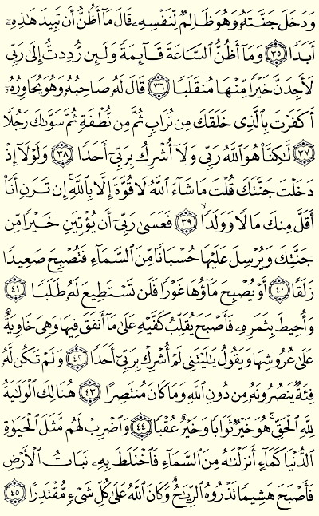
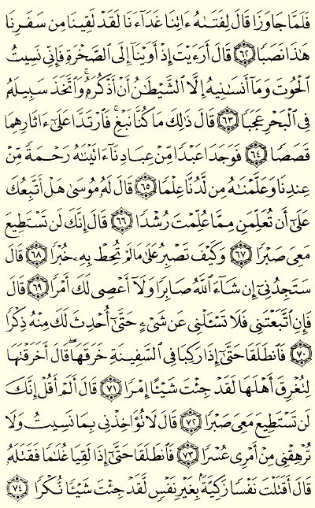
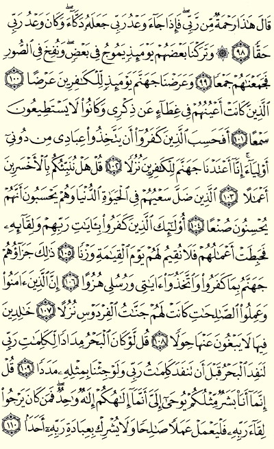
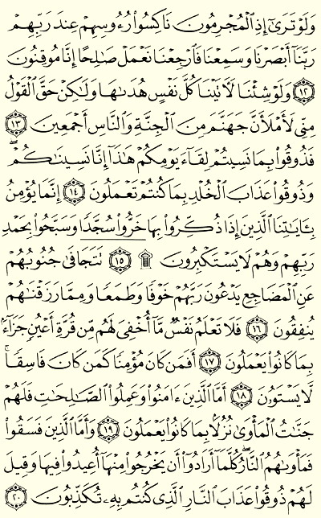

Suratul Kahf Page 293
Tap here to remind others to read too
Suratul Kahf Page 294
Suratul Kahf Page 295
Suratul Kahf Page 296
Suratul Kahf Page 297
Suratul Kahf Page 298

Suratul Kahf Page 299
Suratul Kahf Page 300
Suratul Kahf Page 301

Suratul Kahf Page 302
Suratul Kahf Page 303
Suratul Kahf Page 304

Suratul Mulk Page 562
Suratul Mulk Page 563
Tap here to remind others to read too
Suratul Mulk Page 564
Suratul Sajdah Page 415
Suratul Sajdah Page 416

Suratul Sajdah Page 417